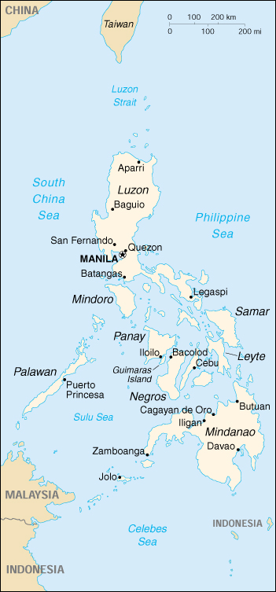

![[Country Flag of Philippines]](../flags/rp-lgflag.jpg)
| Philippines |
|
         |  | |
| Introduction |
Background: The Philippines were ceded by Spain to the US in 1898 following the Spanish-American War. They attained their independence in 1946 after being occupied by the Japanese in World War II. The 21-year rule of Ferdinand MARCOS ended in 1986 when a widespread popular rebellion forced him into exile. In 1992, the US closed down its last military bases on the islands. A quarter-century-old guerrilla war with Muslim separatists on the island of Mindanao, which had claimed 120,000 lives, ended with a treaty in 1996.
| Geography |
Location: Southeastern Asia, archipelago between the Philippine Sea and the South China Sea, east of Vietnam
Geographic coordinates: 13 00 N, 122 00 E
Map references: Southeast Asia
Area:
total:
300,000 sq km
land:
298,170 sq km
water:
1,830 sq km
Area - comparative: slightly larger than Arizona
Land boundaries: 0 km
Coastline: 36,289 km
Maritime claims:
measured from claimed archipelagic baselines
continental shelf:
to depth of exploitation
exclusive economic zone:
200 nm
territorial sea:
irregular polygon extending up to 100 nm from coastline as defined by 1898 treaty; since late 1970s has also claimed polygonal-shaped area in South China Sea up to 285 nm in breadth
Climate: tropical marine; northeast monsoon (November to April); southwest monsoon (May to October)
Terrain: mostly mountains with narrow to extensive coastal lowlands
Elevation extremes:
lowest point:
Philippine Sea 0 m
highest point:
Mount Apo 2,954 m
Natural resources: timber, petroleum, nickel, cobalt, silver, gold, salt, copper
Land use:
arable land:
19%
permanent crops:
12%
permanent pastures:
4%
forests and woodland:
46%
other:
19% (1993 est.)
Irrigated land: 15,800 sq km (1993 est.)
Natural hazards: astride typhoon belt, usually affected by 15 and struck by five to six cyclonic storms per year; landslides; active volcanoes; destructive earthquakes; tsunamis
Environment - current issues: uncontrolled deforestation in watershed areas; soil erosion; air and water pollution in Manila; increasing pollution of coastal mangrove swamps which are important fish breeding grounds
Environment - international agreements:
party to:
Biodiversity, Climate Change, Endangered Species, Hazardous Wastes, Law of the Sea, Marine Dumping, Nuclear Test Ban, Ozone Layer Protection, Tropical Timber 83, Tropical Timber 94, Wetlands, Whaling
signed, but not ratified:
Climate Change-Kyoto Protocol, Desertification
| People |
Population: 81,159,644 (July 2000 est.)
Age structure:
0-14 years:
37% (male 15,344,555; female 14,807,320)
15-64 years:
59% (male 23,777,245; female 24,285,565)
65 years and over:
4% (male 1,312,646; female 1,632,313) (2000 est.)
Population growth rate: 2.07% (2000 est.)
Birth rate: 27.85 births/1,000 population (2000 est.)
Death rate: 6.13 deaths/1,000 population (2000 est.)
Net migration rate: -1.02 migrant(s)/1,000 population (2000 est.)
Sex ratio:
at birth:
1.05 male(s)/female
under 15 years:
1.04 male(s)/female
15-64 years:
0.98 male(s)/female
65 years and over:
0.8 male(s)/female
total population:
0.99 male(s)/female (2000 est.)
Infant mortality rate: 29.52 deaths/1,000 live births (2000 est.)
Life expectancy at birth:
total population:
67.48 years
male:
64.65 years
female:
70.46 years (2000 est.)
Total fertility rate: 3.48 children born/woman (2000 est.)
Nationality:
noun:
Filipino(s)
adjective:
Philippine
Ethnic groups: Christian Malay 91.5%, Muslim Malay 4%, Chinese 1.5%, other 3%
Religions: Roman Catholic 83%, Protestant 9%, Muslim 5%, Buddhist and other 3%
Languages: Pilipino (official, based on Tagalog), English (official)
Literacy:
definition:
age 15 and over can read and write
total population:
94.6%
male:
95%
female:
94.3% (1995 est.)
| Government |
Country name:
conventional long form:
Republic of the Philippines
conventional short form:
Philippines
local long form:
Republika ng Pilipinas
local short form:
Pilipinas
Data code: RP
Government type: republic
Capital: Manila
Administrative divisions: 73 provinces and 61 chartered cities*; Abra, Agusan del Norte, Agusan del Sur, Aklan, Albay, Angeles*, Antique, Aurora, Bacolod*, Bago*, Baguio*, Bais*, Basilan, Basilan City*, Bataan, Batanes, Batangas, Batangas City*, Benguet, Bohol, Bukidnon, Bulacan, Butuan*, Cabanatuan*, Cadiz*, Cagayan, Cagayan de Oro*, Calbayog*, Caloocan*, Camarines Norte, Camarines Sur, Camiguin, Canlaon*, Capiz, Catanduanes, Cavite, Cavite City*, Cebu, Cebu City*, Cotabato*, Dagupan*, Danao*, Dapitan*, Davao City* Davao, Davao del Sur, Davao Oriental, Dipolog*, Dumaguete*, Eastern Samar, General Santos*, Gingoog*, Ifugao, Iligan*, Ilocos Norte, Ilocos Sur, Iloilo, Iloilo City*, Iriga*, Isabela, Kalinga-Apayao, La Carlota*, Laguna, Lanao del Norte, Lanao del Sur, Laoag*, Lapu-Lapu*, La Union, Legaspi*, Leyte, Lipa*, Lucena*, Maguindanao, Mandaue*, Manila*, Marawi*, Marinduque, Masbate, Mindoro Occidental, Mindoro Oriental, Misamis Occidental, Misamis Oriental, Mountain, Naga*, Negros Occidental, Negros Oriental, North Cotabato, Northern Samar, Nueva Ecija, Nueva Vizcaya, Olongapo*, Ormoc*, Oroquieta*, Ozamis*, Pagadian*, Palawan, Palayan*, Pampanga, Pangasinan, Pasay*, Puerto Princesa*, Quezon, Quezon City*, Quirino, Rizal, Romblon, Roxas*, Samar, San Carlos* (in Negros Occidental), San Carlos* (in Pangasinan), San Jose*, San Pablo*, Silay*, Siquijor, Sorsogon, South Cotabato, Southern Leyte, Sultan Kudarat, Sulu, Surigao*, Surigao del Norte, Surigao del Sur, Tacloban*, Tagaytay*, Tagbilaran*, Tangub*, Tarlac, Tawitawi, Toledo*, Trece Martires*, Zambales, Zamboanga*, Zamboanga del Norte, Zamboanga del Sur
Independence: 4 July 1946 (from US)
National holiday: Independence Day, 12 June (1898) (from Spain)
Constitution: 2 February 1987, effective 11 February 1987
Legal system: based on Spanish and Anglo-American law; accepts compulsory ICJ jurisdiction, with reservations
Suffrage: 18 years of age; universal
Executive branch:
chief of state:
President Joseph Ejercito ESTRADA (since 30 June 1998) and Vice President Gloria MACAPAGAL-ARROYO (since 30 June 1998); note - the president is both the chief of state and head of government
head of government:
President Joseph Ejercito ESTRADA (since 30 June 1998) and Vice President Gloria MACAPAGAL-ARROYO (since 30 June 1998); note - the president is both the chief of state and head of government
cabinet:
Cabinet appointed by the president with the consent of the Commission of Appointments
elections:
president and vice president elected on separate tickets by popular vote for six-year terms; election last held 11 May 1998 (next to be held 11 May 2004)
election results:
Joseph Ejercito ESTRADA elected president; percent of vote - approximately 40%; Gloria MACAPAGAL-ARROYO elected vice president; percent of vote - NA%
Legislative branch:
bicameral Congress or Kongreso consists of the Senate or Senado (24 seats - one-half elected every three years; members elected by popular vote to serve six-year terms) and the House of Representatives or Kapulungan Ng Mga Kinatawan (221 seats; members elected by popular vote to serve three-year terms; note - an additional 50 members may be appointed by the president)
elections:
Senate - last held 11 May 1998 (next to be held 11 May 2001); House of Representatives - elections last held 11 May 1998 (next to be held 11 May 2001)
election results:
Senate - percent of vote by party - NA; seats by party - LAMP 12, Lakas 5, PRP 2, LP 1, other 3; note - the Senate now has only 23 members with one seat vacated when Gloria MACAPAGAL-ARROYO became vice president; the seat can only be filled by election and is likely to remain open until the next regular election in 2001; House of Representatives - percent of vote by party - NA; seats by party - LAMP 135, Lakas 37, LP 13, Aksyon Demokratiko 1, other 35
Judicial branch: Supreme Court, justices are appointed for four-year terms by the president on the recommendation of the Judicial and Bar Council
Political parties and leaders: Aksyon Demokratiko or Democratic Action [Raul ROCO]; Laban Ng Masang Pilipino or LAMP (Struggle of the Filipino Masses) [Joseph ESTRADA, titular head, Eduardo "Danding" COJUANGO, chairman, Edgardo ANGARA, party president]; Lakas [Raul MANGLAPUS, chairman, Gloria MACAPAGAL-ARROYO, secretary general, Jose DE VENECIA, party president]; Liberal Party or LP [Raul DAZA, president, Jovito SALONGA, chairman, Florencio ABAD, secretary general]; People's Reform Party or PRP [Miriam DEFENSOR-SANTIAGO]
International organization participation: APEC, AsDB, ASEAN, CCC, CP, ESCAP, FAO, G-24, G-77, IAEA, IBRD, ICAO, ICFTU, ICRM, IDA, IFAD, IFC, IFRCS, IHO, ILO, IMF, IMO, Inmarsat, Intelsat, Interpol, IOC, IOM, ISO, ITU, NAM, OPCW, UN, UNCTAD, UNESCO, UNHCR, UNIDO, UNMIK, UNTAET, UNU, UPU, WCL, WFTU, WHO, WIPO, WMO, WToO, WTrO
Diplomatic representation in the US:
chief of mission:
Ambassador Ernesto MACEDA
chancery:
1600 Massachusetts Avenue NW, Washington, DC 20036
telephone:
[1] (202) 467-9300
FAX:
[1] (202) 328-7614
consulate(s) general:
Chicago, Honolulu, Los Angeles, New York, San Francisco, and Tamuning (Guam)
consulate(s):
San Diego and San Jose (Saipan)
Diplomatic representation from the US:
chief of mission:
Ambassador Thomas C. HUBBARD
embassy:
1201 Roxas Boulevard, Ermita Manila 1000
mailing address:
FPO 96515
telephone:
[63] (2) 523-1001
FAX:
[63] (2) 522-4361
Flag description: two equal horizontal bands of blue (top) and red with a white equilateral triangle based on the hoist side; in the center of the triangle is a yellow sun with eight primary rays (each containing three individual rays) and in each corner of the triangle is a small yellow five-pointed star
| Economy |
Economy - overview: In 1998 the Philippine economy - a mixture of agriculture, light industry, and supporting services - deteriorated as a result of spillover from the Asian financial crisis and poor weather conditions. Growth fell to about -0.5% in 1998 from 5% in 1997, but recovered to 2.9% in 1999. The government has promised to continue its economic reforms to help the Philippines match the pace of development in the newly industrialized countries of East Asia. The strategy includes improving infrastructure, overhauling the tax system to bolster government revenues, and moving toward further deregulation and privatization of the economy.
GDP: purchasing power parity - $282 billion (1999 est.)
GDP - real growth rate: 2.9% (1999 est.)
GDP - per capita: purchasing power parity - $3,600 (1999 est.)
GDP - composition by sector:
agriculture:
20%
industry:
32%
services:
48% (1997 est.)
Population below poverty line: 32% (1997 est.)
Household income or consumption by percentage share:
lowest 10%:
2.4%
highest 10%:
33.5% (1994)
Inflation rate (consumer prices): 6.8% (1999)
Labor force: 32 million (1999 est.)
Labor force - by occupation: agriculture 39.8%, government and social services 19.4%, services 17.7%, manufacturing 9.8%, construction 5.8%, other 7.5% (1998 est.)
Unemployment rate: 9.6% (October 1998)
Budget:
revenues:
$14.5 billion
expenditures:
$12.6 billion, including capital expenditures of $NA (1998 est.)
Industries: textiles, pharmaceuticals, chemicals, wood products, food processing, electronics assembly, petroleum refining, fishing
Industrial production growth rate: 1.7% (1999 est.)
Electricity - production: 39.623 billion kWh (1998)
Electricity - production by source:
fossil fuel:
70.12%
hydro:
10.75%
nuclear:
0%
other:
19.13% (1998)
Electricity - consumption: 36.849 billion kWh (1998)
Electricity - exports: 0 kWh (1998)
Electricity - imports: 0 kWh (1998)
Agriculture - products: rice, coconuts, corn, sugarcane, bananas, pineapples, mangoes; pork, eggs, beef; fish
Exports: $34.8 billion (f.o.b., 1999 est.)
Exports - commodities: electronic equipment, machinery and transport equipment, garments, coconut products
Exports - partners: US 34%, EU 20%, Japan 14%, Netherlands 8%, Singapore 6%, UK 6%, Hong Kong 4% (1998)
Imports: $30.7 billion (f.o.b., 1999 est.)
Imports - commodities: raw materials and intermediate goods, capital goods, consumer goods, fuels
Imports - partners: US 22%, Japan 20%, South Korea 8%, Singapore 6%, Taiwan 5%, Hong Kong 4% (1998 est.)
Debt - external: $51.9 billion (1999)
Economic aid - recipient: ODA, $1.1 billion (1998)
Currency: 1 Philippine peso (P) = 100 centavos
Exchange rates: Philippine pesos (P) per US$1 - 40.427 (January 2000), 39.089 (1999), 40.893 (1998), 29.471 (1997), 26.216 (1996), 25.714 (1995)
Fiscal year: calendar year
| Communications |
Telephones - main lines in use: 1.9 million (1997)
Telephones - mobile cellular: 1.959 million (1998)
Telephone system:
good international radiotelephone and submarine cable services; domestic and interisland service adequate
domestic:
domestic satellite system with 11 earth stations
international:
9 international gateways; satellite earth stations - 3 Intelsat (1 Indian Ocean and 2 Pacific Ocean); submarine cables to Hong Kong, Guam, Singapore, Taiwan, and Japan
Radio broadcast stations: AM 366, FM 290, shortwave 3 (1999)
Radios: 11.5 million (1997)
Television broadcast stations: 31 (1997)
Televisions: 3.7 million (1997)
Internet Service Providers (ISPs): 93 (1999)
| Transportation |
Railways:
total:
492 km (an additional 405 km are not in operation)
narrow gauge:
492 km 1.067-m gauge (1996)
Highways:
total:
199,950 km
paved:
39,590 km
unpaved:
160,360 km (1998 est.)
Waterways: 3,219 km; limited to shallow-draft (less than 1.5 m) vessels
Pipelines: petroleum products 357 km
Ports and harbors: Batangas, Cagayan de Oro, Cebu, Davao, Guimaras Island, Iligan, Iloilo, Jolo, Legaspi, Manila, Masao, Puerto Princesa, San Fernando, Subic Bay, Zamboanga
Merchant marine:
total:
480 ships (1,000 GRT or over) totaling 5,973,024 GRT/9,025,087 DWT
ships by type:
bulk 159, cargo 122, chemical tanker 5, combination bulk 9, container 7, liquified gas 13, livestock carrier 9, passenger 4, passenger/cargo 12, petroleum tanker 47, refrigerated cargo 20, roll-on/roll-off 19, short-sea passenger 32, specialized tanker 2, vehicle carrier 20 (1999 est.)
note:
a flag of convenience registry; Japan owns 19 ships, Hong Kong 5, Cyprus 1, Denmark 1, Greece 1, Netherlands 1, Singapore 1, and UK 1 (1998 est.)
Airports: 266 (1999 est.)
Airports - with paved runways:
total:
76
over 3,047 m:
4
2,438 to 3,047 m:
5
1,524 to 2,437 m:
26
914 to 1,523 m:
31
under 914 m:
10 (1999 est.)
Airports - with unpaved runways:
total:
190
1,524 to 2,437 m:
3
914 to 1,523 m:
66
under 914 m:
121 (1999 est.)
Heliports: 1 (1999 est.)
| Military |
Military branches: Army, Navy (includes Coast Guard and Marine Corps), Air Force
Military manpower - military age: 20 years of age
Military manpower - availability:
males age 15-49:
20,731,979 (2000 est.)
Military manpower - fit for military service:
males age 15-49:
14,607,014 (2000 est.)
Military manpower - reaching military age annually:
males:
835,817 (2000 est.)
Military expenditures - dollar figure: $995 million (FY98)
Military expenditures - percent of GDP: 1.5% (FY98)
| Transnational Issues |
Disputes - international: involved in a complex dispute over the Spratly Islands with China, Malaysia, Taiwan, Vietnam, and possibly Brunei; claim to Malaysia's Sabah State has not been fully revoked
Illicit drugs: exports locally produced marijuana and hashish to East Asia, the US, and other Western markets; serves as a transit point for heroin and crystal methamphetamine